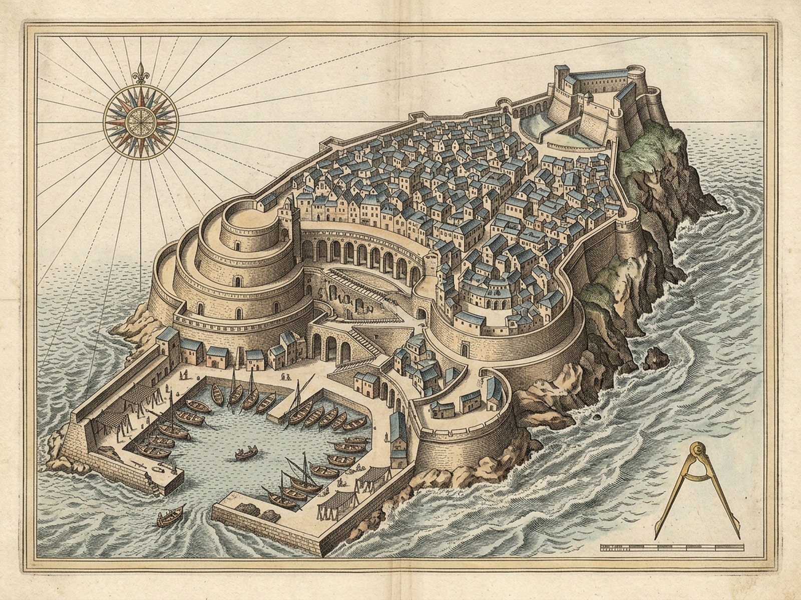
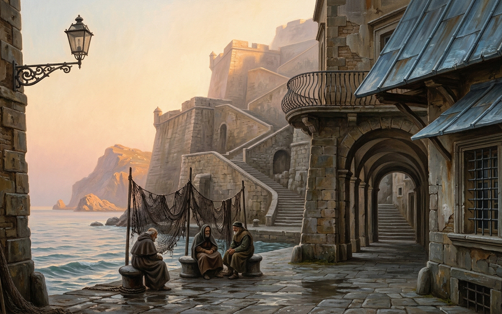

CALIPERS IDLE
Pin Jaw A on any architectural anchor (A1–A9) and span to a second anchor. Static dimensions tell nothing.
Drag Anchor A→B or 2-Tap · Tab or [ / ] or ← / → Cycle A1–A9 · Enter/Space Pin & Span · 1–6 Chords · P Plates · Esc Lift · R Drain · M Sound
CHIROMANCY FOLIO · 0 / 6
Mute Orthographic Stone
MUTE SURVEY · 0 / 6 SPANS
79 basalt stair-steps · 58° curved arcades · 14-gauge oxidized zinc roof scales · 9 brass survey anchors (A1–A9).
Static spatial measurements tell nothing. Inspecting any single landmark yields cold geometry alone; span pairs of architectural anchors with the brass calipers to test where relational memory swells the sponge-stone.
ZAIRA · ARCHIVAL FOLIO PLATES
Diptych View
Survey Map (map.png)
City Plate (image.png)
Loupe 1.8× [Z]
Close [P / Esc]

PLATE I · Topological Bastion & Datum Sightline Survey (map.png · 1600×1200) · Static contours tell nothing.

PLATE II · Illuminated Bastion Elevation & Oxidized Zinc Roofs (image.png · 1600×1000) · Silent masonry.